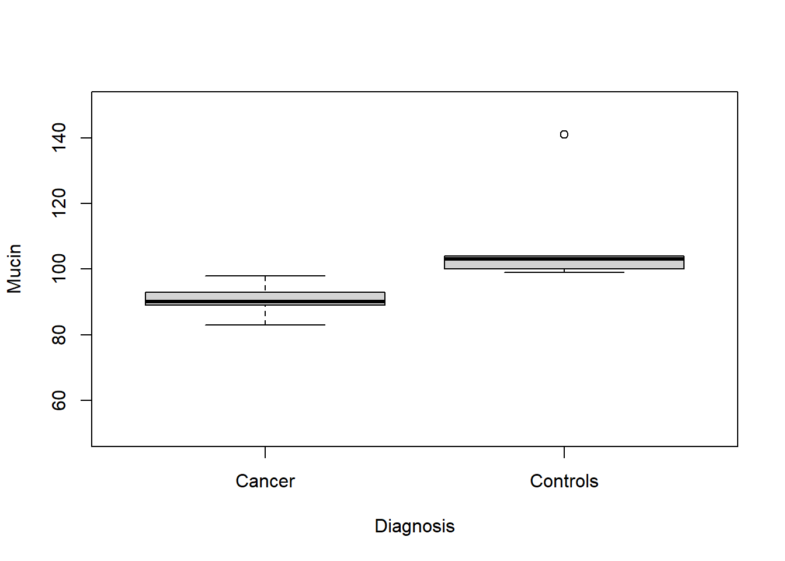
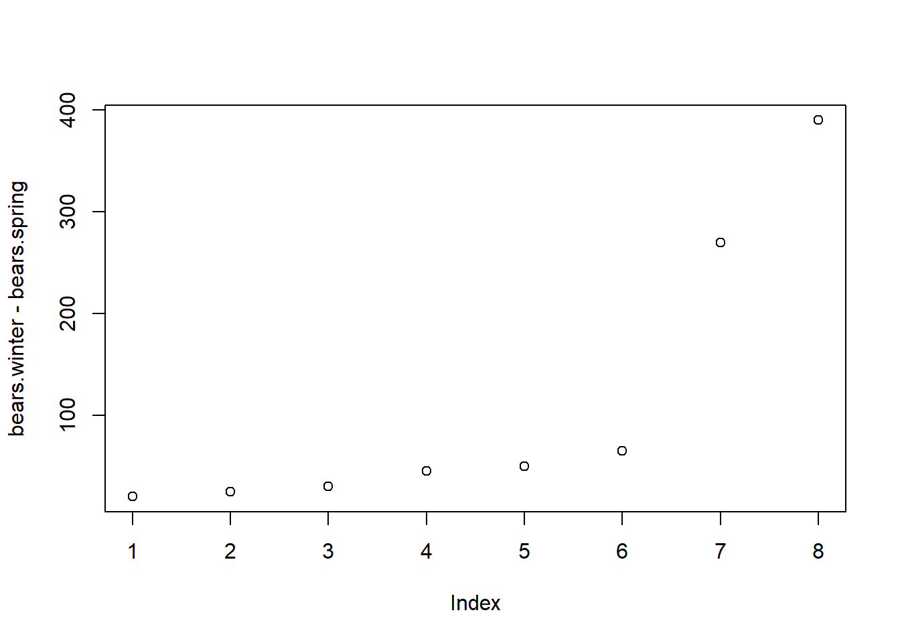
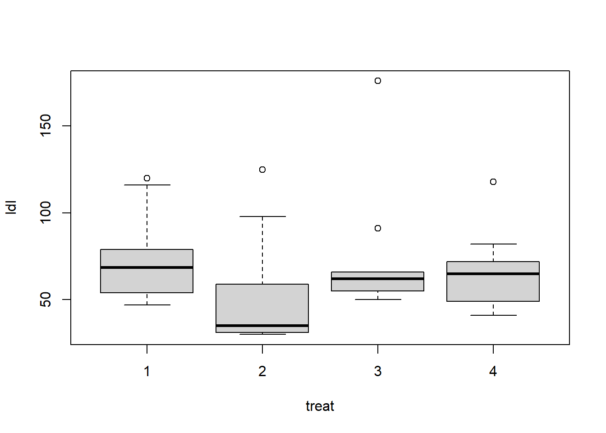

library(tidyverse)
library(coin)5 If you have non-normal data and one explanatory variable: Wilcoxon and Kruskal-Wallis
If you have outliers in your data, or the data within each treatment group are not normally distributed, t-tests are more likely to give non-significant p-values. Outliers and non-normal distributions reduce the power of t-tests to detect significant effects. Even when graphs of your data show that there is a difference among the groups, you may get non-significant p-values from t-tests as a result of the outliers or non-normal distributions.
In these cases, the Wilcoxon rank tests and Kruskal-Wallis tests are alternatives to the t-test and anova. However, none of these methods allow you to have more than one explanatory variable. For this reason, I suggest that, instead of using these methods, you consider the methods that allow for more than one explanatory variable, described in the following chapter.
If your sample size is large, deviations from normal distribution may be less of a problem for t-tests and ANOVA. However, even with a large sample size, you can often increase power by using a rank method.
Load these libraries to run the examples in this chapter.
As an example of what we mean by ranks, here are observations from the sleep data frame from R with the original values of the variable extra and the values of extra converted to ranks. You can use the help(sleep) command to read a description of the data set.
ranked.data = data.frame(extra = sort(sleep$extra),
ranked.extra = rank(sort(sleep$extra)))
ranked.data extra ranked.extra
1 -1.6 1.0
2 -1.2 2.0
3 -0.2 3.0
4 -0.1 4.5
5 -0.1 4.5
6 0.0 6.0
7 0.1 7.0
8 0.7 8.0
9 0.8 9.5
10 0.8 9.5
11 1.1 11.0
12 1.6 12.0
13 1.9 13.0
14 2.0 14.0
15 3.4 15.5
16 3.4 15.5
17 3.7 17.0
18 4.4 18.0
19 4.6 19.0
20 5.5 20.05.1 Alternative to two-sample t-test: Wilcoxon rank sum for two independent samples
Let’s look at the colon cancer example from the previous chapter, where we use a t-test for the question, do colon cancer patients have elevated levels of the mucin protein in their blood?
Here is R code with the data and a graph.
cancer=c(83, 89, 90, 93, 98)
controls=c(99, 100, 103, 104, 141)
Mucin=c(cancer,controls)
Diagnosis=c(rep("Cancer",5), rep("Controls",5))
Diagnosis = as.factor(Diagnosis) # Some functions require factors.
colon.data=data.frame(Diagnosis, Mucin)
colon.data Diagnosis Mucin
1 Cancer 83
2 Cancer 89
3 Cancer 90
4 Cancer 93
5 Cancer 98
6 Controls 99
7 Controls 100
8 Controls 103
9 Controls 104
10 Controls 141with(colon.data, boxplot(Mucin ~ Diagnosis, ylab="Mucin", ylim=c(50,150)))
The boxplot and data show that there is complete separation between the two groups. In fact, all the cancer subjects have lower mucin values (98 or less) than any of the controls (99 or greater). But notice the large outlier in the control group, where one subject has a mucin value of 141.
Here are the means and medians of the two groups. Notice that the mean of the control group, 109.4, is larger than the median, 103. This difference is due to the outlier.
aggregate(Mucin ~ Diagnosis, colon.data, mean) Diagnosis Mucin
1 Cancer 90.6
2 Controls 109.4aggregate(Mucin ~ Diagnosis, colon.data, median) Diagnosis Mucin
1 Cancer 90
2 Controls 103Here is the ordinary two-sample t-test, using the R function t.test.
with(colon.data, t.test(Mucin ~ Diagnosis, var.equal=TRUE))
Two Sample t-test
data: Mucin by Diagnosis
t = -2.258, df = 8, p-value = 0.05389
alternative hypothesis: true difference in means between group Cancer and group Controls is not equal to 0
95 percent confidence interval:
-37.9994752 0.3994752
sample estimates:
mean in group Cancer mean in group Controls
90.6 109.4 The output from the t-test includes the means of the two groups (90.6 and 109.4), and the 95% confidence interval for difference between the means of the two groups (-37.99 to 0.399). Because the 95% confidence interval includes 0, we get p > 0.05.
The Wilcoxon rank sum test is an alternative to the t-test. The Wilcoxon rank sum test uses the rank value of each observation, rather than the actual value, so it is not affected by the outlier.
Here is the Wilcoxon test using the R function wilcox.test.
with(colon.data, wilcox.test(Mucin ~ Diagnosis, conf.int=TRUE))
Wilcoxon rank sum exact test
data: Mucin by Diagnosis
W = 0, p-value = 0.007937
alternative hypothesis: true location shift is not equal to 0
95 percent confidence interval:
-51 -5
sample estimates:
difference in location
-13 Using the rank values, the Wilcoxon rank sum test yields a p-value of p = 0.0079. We reject the null hypothesis and conclude that colon cancer patients have mucin levels different from those of healthy controls.
Problems with too many tied values and how to fix them
You may sometimes have a data set with a lot of observations that have the same value (tied values). Base R’s wilcox.test() handles ties via normal approximations; it sometimes gives warning message with small sample sizes. If that happens, an alternative is to use wilcox_test() from the coin package. The coin::wilcox_test() function handles exact distribution adjustments for ties.
In case you need it, here is the code to run the coin::wilcox_test.
with(colon.data, coin::wilcox_test(Mucin ~ Diagnosis, conf.int=TRUE))
Asymptotic Wilcoxon-Mann-Whitney Test
data: Mucin by Diagnosis (Cancer, Controls)
Z = -2.6112, p-value = 0.009023
alternative hypothesis: true mu is not equal to 0
95 percent confidence interval:
-48 -6
sample estimates:
difference in location
-13 5.2 How do you quantify the difference between two treatment groups using ranks? The Hodges-Lehmann location shift estimator
When you compare two treatment groups using a t-test, the output tells you the means of the two group and the difference between the means.
When we compare the ranks of two treatment groups, the most commonly used descriptor of differences is the Hodges-Lehmann (HL) location shift estimator. The HL estimator is the median of all paired differences between the two treatment groups. It’s easier to understand with a simple example.
Suppose we have the following data on two groups.
treatment = c(5, 7, 8, 10, 12, 15, 18)
control = c(9, 11, 13, 14, 16, 20, 25)We calculate all the pairwise (treatment - control) differences.
# Calculate all pairwise treatment - control differences
cross_diffs = outer(treatment, control, "-")
cross_diffs [,1] [,2] [,3] [,4] [,5] [,6] [,7]
[1,] -4 -6 -8 -9 -11 -15 -20
[2,] -2 -4 -6 -7 -9 -13 -18
[3,] -1 -3 -5 -6 -8 -12 -17
[4,] 1 -1 -3 -4 -6 -10 -15
[5,] 3 1 -1 -2 -4 -8 -13
[6,] 6 4 2 1 -1 -5 -10
[7,] 9 7 5 4 2 -2 -7Sort the pairwise differences.
sort(cross_diffs) [1] -20 -18 -17 -15 -15 -13 -13 -12 -11 -10 -10 -9 -9 -8 -8 -8 -7 -7 -6
[20] -6 -6 -6 -5 -5 -4 -4 -4 -4 -3 -3 -2 -2 -2 -1 -1 -1 -1 1
[39] 1 1 2 2 3 4 4 5 6 7 9The Hodges-Lehmann (HL) estimator is then the median of all the pairwise differences.
median(cross_diffs)[1] -4The Hodges-Lehmann (HL) estimator tells us that the treatment group is shifted by -4 units compared to the control group.
Notice that the HL estimator is an estimate of a shift parameter, that is, the amount by which the entire distribution of outcomes in one group is displaced relative to the other. This is not the same as the difference in means or the difference in medians. Instead, it is based on the differences between all the points in each group.
In this particular example, the median of the differences (the HL estimator) happens to be equal to the difference of the medians, but this need not always be true.
median(treatment)[1] 10median(control)[1] 14median(treatment) - median(control)[1] -4Let’s look again at the colon data example. The output from the Wilcoxon test includes the sample estimate of the difference in location. The difference in location is the Hodges-Lehmann estimator, which is -13 for these data.
with(colon.data, wilcox.test(Mucin ~ Diagnosis, conf.int=TRUE))
Wilcoxon rank sum exact test
data: Mucin by Diagnosis
W = 0, p-value = 0.007937
alternative hypothesis: true location shift is not equal to 0
95 percent confidence interval:
-51 -5
sample estimates:
difference in location
-13 The 95% confidence interval for the difference in location for these data is -51 to -5 (the Moses confidence interval). Because the 95% confidence interval does not include 0, we get p < 0.05. The Hodges-Lehmann estimator is not necessarily equal to the difference between the medians of the two groups. As described below, there may be no difference between the group medians. But if one group tends to have higher (or lower) values than the other group (stochastic dominance), the Wilcoxon test can give p < 0.05 even if the medians are identical.
5.3 Sample size for a t-test to give power of 0.8 for the colon data
What sample size would we need if we wanted to get a significant p-value for the t-test for the colon data? The difference between the group means is delta = 109.4-90.6 = 18.8. The standard deviation in the control group is sd = 17.8. We’ll use the usual significance level (alpha) of sig.level = 0.05, and desired power of 0.8. The function power.t.test gives the required sample size for these assumptions:
power.t.test(delta = 18.8, sd = 17.8, sig.level = 0.05, power = 0.8)
Two-sample t test power calculation
n = 15.09557
delta = 18.8
sd = 17.8
sig.level = 0.05
power = 0.8
alternative = two.sided
NOTE: n is number in *each* groupWe would need a sample size of 15 per group, 30 total, to have an 80% chance of getting p < 0.05 using a t-test. The chapters on sample size and power provide more explanation.
5.4 Alternative to paired t-test: Wilcoxon signed rank test
The paired t-test is often used to test for difference in paired (matched) samples, such as the difference before and after treatment. The Wilcoxon signed rank test is a rank-based analog of the paired t-test. Here’s an example.
Suppose we would like to know if bears lose weight between winter and spring, while they are hibernating. We collect the following data.
bears.winter=c(300,470,550,760,800,955,1260,1290)
bears.spring=c(280,445,520,715,750,890,990,900)
Weight=c(bears.winter, bears.spring)
Season=c(rep("Winter",8), rep("Spring",8))
bear.data=data.frame(Season,Weight)
bear.data Season Weight
1 Winter 300
2 Winter 470
3 Winter 550
4 Winter 760
5 Winter 800
6 Winter 955
7 Winter 1260
8 Winter 1290
9 Spring 280
10 Spring 445
11 Spring 520
12 Spring 715
13 Spring 750
14 Spring 890
15 Spring 990
16 Spring 900The graph of the weight change shows that there are two large outliers.
plot(bears.winter-bears.spring)
We’ll first use the paired t-test to examine the change in weight of bears, where the same bears were weighed in winter and in spring. Then we’ll analyze the data using the Wilcoxon signed rank test.
t.test(bears.winter, bears.spring, paired=TRUE)
Paired t-test
data: bears.winter and bears.spring
t = 2.274, df = 7, p-value = 0.05714
alternative hypothesis: true mean difference is not equal to 0
95 percent confidence interval:
-4.460666 228.210666
sample estimates:
mean difference
111.875 The paired t-test gives p = 0.057, indicating that bears do not lose weight while hibernating.
wilcox.test(bears.winter, bears.spring, paired=TRUE)
Wilcoxon signed rank exact test
data: bears.winter and bears.spring
V = 36, p-value = 0.007813
alternative hypothesis: true location shift is not equal to 0The Wilcoxon signed rank test gives a significant result, p = 0.0078, indicating that bears lose weight during winter hibernation.
Notice that all the bears actually lose weight. Using the paired t-test, the p-value is not significant, and we conclude that bears don’t lose weight. The Wilcoxon signed rank test gives us p =0.0078, so we reject the null hypothesis, and conclude that bears do lose weight.
5.5 Rank alternatives to one-way ANOVA: Kruskal-Wallis and Rfit
One-way ANOVA allows us to compare two or more treatment groups. The Kruskal-Wallis test is one rank alternative. Another alternative is the rank-based oneway.rfit function from the package Rfit.
We’ll use the quail data set from the Rfit package. Thirty-nine quail were randomized to one of 4 treatments for lowering low density lipoprotein (ldl). The variable “treat” is a factor. The variable ldl is the low density lipoprotein.
# install.packages("Rfit") # if not already installed
library(Rfit)head(quail, 10) # display the first 10 rows of the quail data set treat ldl
1 1 52
2 1 67
3 1 54
4 1 69
5 1 116
6 1 79
7 1 68
8 1 47
9 1 120
10 1 73with(quail, boxplot(ldl ~ treat))
The boxplots suggest that there are differences among the 4 treatment groups. But there are large outliers that will adversely affect t-tests or ANOVA.
Here are the median values for each treatment.
aggregate(ldl~treat, quail, median) treat ldl
1 1 68.5
2 2 35.0
3 3 62.0
4 4 65.0We’ll begin with a standard one-way analysis of variance.
quail.lm.fit = with(quail, lm(ldl ~ treat))
anova(quail.lm.fit)Analysis of Variance Table
Response: ldl
Df Sum Sq Mean Sq F value Pr(>F)
treat 3 3189 1062.85 1.1433 0.3451
Residuals 35 32536 929.61 The one-way analysis of variance indicates that there is no difference among the 4 treatments (p = 0.345).
Next try the Kruskal-Wallis test.
with(quail, kruskal.test(ldl, treat))
Kruskal-Wallis rank sum test
data: ldl and treat
Kruskal-Wallis chi-squared = 7.1879, df = 3, p-value = 0.06614The Kruskal-Wallis test approaches significance, with p = 0.066.
Alternatively, we can use the function oneway.rfit, from the Rfit package, to perform a rank-based analysis of the quail data.
quail.oneway.rfit = with(quail, oneway.rfit(ldl, treat))
quail.oneway.rfitCall:
oneway.rfit(y = ldl, g = treat)
Overall Test of All Locations Equal
Drop in Dispersion Test
F-Statistic p-value
3.916944 0.016394
Pairwise comparisons using Rfit
data: ldl and treat
1 2 3
2 0.0046 - -
3 0.6315 0.0157 -
4 0.5599 0.0243 0.9069
P value adjustment method: none The oneway.rfit function indicates that there is a significant difference among the quail treatment groups p = 0.016394. The oneway.rfit output also shows pairwise comparisons that test for differences among the 4 treatment groups. By default, there is no p-value adjustment for multiple hypothesis testing. We can request estimates of the differences between each pair of treatments with confidence intervals adjusted for multiple comparisons by specifying method = ”tukey”.
summary(quail.oneway.rfit, method="tukey")
Multiple Comparisons
Method Used tukey
I J Estimate St Err Lower Bound CI Upper Bound CI
1 1 2 -25 8.26704 -47.29541 -2.70459
2 1 3 -4 8.26704 -26.29541 18.29541
3 1 4 -5 8.49358 -27.90636 17.90636
4 2 3 -21 8.26704 -43.29541 1.29541
5 2 4 -20 8.49358 -42.90636 2.90636
6 3 4 1 8.49358 -21.90636 23.90636For the pairwise comparisons, if the lower and upper bound CI do not include zero then the pair of treatments differ after Tukey correction for multiple hypothesis testing. Thus, in the first row, which compares treatments 1 and 2, the lower and upper confidence bounds are -47.29 to -.27, which does not include zero, so the difference is significant.
5.6 Do the Wilcoxon tests and Kruskal-Wallis test compare the medians of groups?
If the treatment groups do not differ in shape, but differ only by a shift in their location, then the Wilcoxon tests and Kruskal-Wallis compare the medians of the treatment groups. If the treatment groups differ in shape and location, these rank tests compare the entire distributions of the groups (that is, the ranks of all the observations, not just the median).
You can construct two treatment groups that have identical medians, but that differ in their rank sums, and will give significant differences in the Wilcoxon or Kruskal-Wallis tests.
For the following data, the medians of the groups are both zero but the standard deviations (shape) are different.
Group.A=c(0,0,0,0,0,0,0,0,0,0,0,0,0,0,0,0,0,0,0,0,0,0,0,0,
0,0,0,0,0,0,0,0,0,0,0,0,1,1,1,1,1,1,1,1,1,1,1,1,
1,1,1,1,1,1,1,1,1,1,1,1,1,1,1,1,1,1,1,1)
Group.B=c(0,0,0,0,0,0,0,0,0,0,0,0,0,0,0,0,0,0,0,0,0,0,0,0,
0,0,0,0,0,0,0,0,0,0,0,0,2,2,2,2,2,2,2,2,2,2,2,2,
2,2,2,2,2,2,2,2,2,2,2,2,2,2,2,2,2,2,2,2)
median(Group.A) # 0[1] 0median(Group.B) # 0[1] 0sd(Group.A) # 0.5[1] 0.5028453sd(Group.B) # 1.0[1] 1.005691wilcox.test(Group.A, Group.B)
Wilcoxon rank sum test with continuity correction
data: Group.A and Group.B
W = 1800, p-value = 0.01428
alternative hypothesis: true location shift is not equal to 0The Wilcoxon rank sum test gives p = 0.014, indicating that the two groups are significantly different. This result shows that, although group A and group B have identical medians, they differ in scale (standard deviation), and differ significantly according to the Wilcoxon test. In this situation, the Wilcoxon test is said to be a test for “stochastic dominance”, which means that one group tends to have higher values than the other group. A caveat is that the calculation of the p-value for the Wilcoxon test assumes treatment groups do not differ in scale but differ only by a shift in their location.
5.7 When should I use t-tests and ANOVA versus rank methods?
T-tests and the classical rank methods we looked at in this chapter may sometimes be sufficient to get good results. Their weakness is that these tests only allow for one explanatory variable. For most analyses, you are more likely to get p < 0.05 if you include additional explanatory variables in an analysis of variance, or if you use the robust and rank-based methods described in the previous and next chapters that allow for more than one explanatory variable.
The Wilcoxon, Kruskal-Wallis tests don’t require the assumption of normal distributions, and are not affected by outliers, so why don’t we always use them instead of t-tests and one-way ANOVA? There are several considerations.
If the data are exactly normally distributed, then ANOVA and t-tests have slightly more power to detect differences than do the standard versions of the rank tests. However, even with small or moderate deviations from normality, the rank tests will usually have power equal to or greater than the power of the tests that assume normality. When the data within treatment groups is substantially non-normal, the rank tests will pretty reliably have power equal to or greater than the tests that assume normality.
When you have a very small sample size (5 or less per group) it may be mathematically nearly impossible to get a significant p-value using a rank test. But it may be possible to get significance using a t-test or other parametric test.
One criticism of using rank methods used to be the difficulty of calculating confidence intervals. Before modern computers existed, getting confidence intervals for rank methods was harder than for methods that assume a normal distribution. But with today’s computers it is easy to get confidence intervals for rank methods.
Another criticism of rank methods is the difficulty in understanding the effect size, particularly among readers who are not familiar with the Hodges-Lehmann estimator.